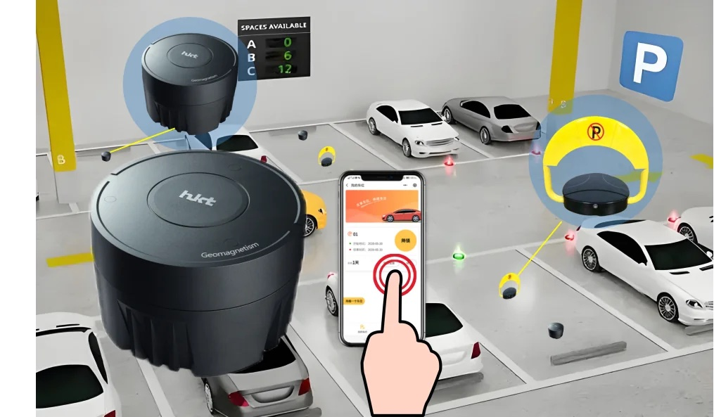
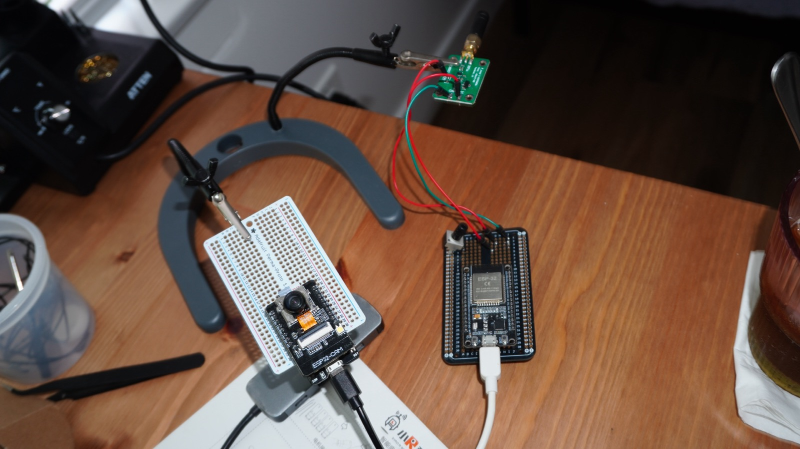
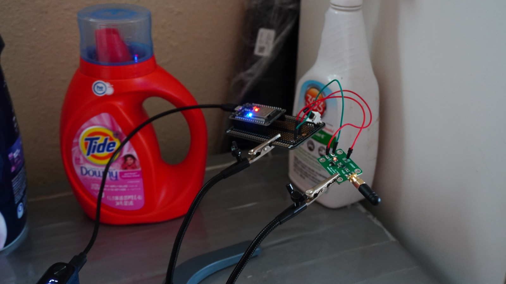
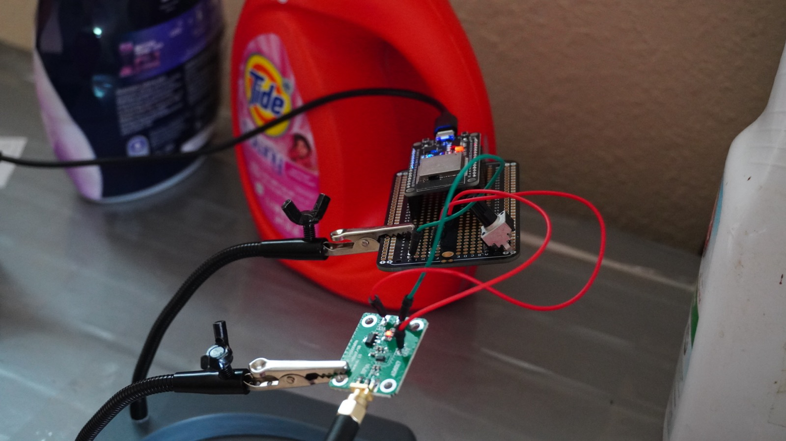

Product development engineer, student startup
The magnetometer already has its place on the market for this type of IoT sensor (pics of a few of our competitors) And it seems like it is not yielding the expected results based on the fact that there are many competitors out there, but their products were not really well-known. Hence, I needed to come up with something different and applicable.

After careful consideration, I had decided to implement a power sensor targetting 2.4GHz frequency from the infotainment in modern cars as I do not see how this trend of having big screen in cars die out. I also added a trained ESP32-CAM with computer vision to verify whether the car is present visually or is it just bad signal.




Currently testing and gathering data
...